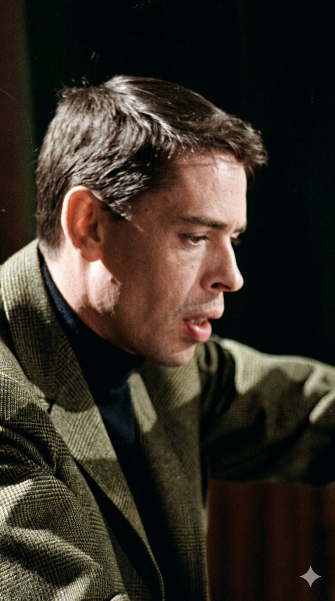

ז'אק ברל
Jacques Brel
אטימולוגיה ומקור השם המלא
שם פרטי: ז'אק (Jacques)
נולד בשם המלא ז'אק רומן ז'ורז' ברל.
Jacques: הגרסה הצרפתית לשם העברי "יעקב" (Latiin: Jacobus). המשמעות היא "זה שעוקב" או "תופס בעקב". מטאפורית, זהו שם שמייצג אדם שסולל את דרכו בעקשנות.
שמות אמצעיים: רומן (Romain), ז'ורז' (Georges)
Romain: מהמילה הלטינית Romanus, שמשמעותה "אזרח רומא", סמל של מסורת ויציבות בורגנית קתולית.
Georges: מקור יווני עתיק (Georgios) שמשמעותו "עובד אדמה" או "איכר".
שם משפחה: ברל (Brel)
שם משפחה ממוצא פלמי-בלגי (Flemish). יש הסבורים כי מקורו במילה העתיקה "Brell" שמשמעותה קשורה לתהליך טוויית צמר, או שזהו כינוי שניתן לאדם פטפטן וצעקני באזור פלנדריה. בניגוד לזמרים רבים אחרים, ברל מעולם לא שינה את שמו ושמר עליו בגאווה כסמל לזהותו הבלגית.
ילדות בבלגיה, שעמום בורגני והבריחה
חיים בורגניים בבריסל: ז'אק ברל לא נולד למצוקה או לרחוב הפריזאי. הוא נולד בשארבק (Schaerbeek), פרוור של בריסל, בלגיה, למשפחה קתולית, בורגנית, ואמידה מאוד. אביו רומן היה שותף במפעל מצליח לייצור קרטונים. ילדותו של ז'אק הייתה נוחה פיננסית, אך הוא סבל משעמום עמוק, מחנק וחוסר השראה בסביבה השמרנית.
המרד במפעל הקרטון: כתלמיד, הוא היה חולמני ולא מוצלח. בגיל 18, אביו שיבץ אותו לעבודה במפעל הקרטון המשפחתי "Vanneste & Brel". ז'אק שנא כל רגע ממה שהוא הגדיר כ"חיים אפורים וחסרי תוחלת". הנחמה היחידה שלו הייתה פעילות בתנועת נוער קתולית (שם הקים להקת תיאטרון) והתחלת כתיבת שירים על גיטרה.
העזיבה הקשה לפריז: למרות שהיה נשוי ל"מיש" (Miche) ואב לבנות, התסכול של ברל מהחיים הבורגניים גבר. בשנת 1953, בגיל 24, הוא קיבל החלטה קורעת לב: הוא נטש את משרתו במפעל, השאיר את משפחתו בבלגיה (אף ששמר איתן על קשר ותמך בהן בהמשך), ועבר לפריז לבדו כדי לנסות את מזלו כזמר קברטים. תחילת דרכו בפריז הייתה רצופה בכישלונות, עוני, ולעג על ה"מבטא הבלגי" שלו, אך התעקשותו השתלמה.
אידאולוגיה והישגים
התמסרות פיזית וזיעה (ההופעה הטוטאלית): האידאולוגיה הבימתית של ברל הייתה פנומנלית: הוא לא רק "שר" את השירים, הוא "חי" ו"דימם" אותם על הבמה. הופעותיו היו מלוות בהבעות פנים דרמטיות, מחוות גוף אקספרסיביות, ובעיקר בהמון זיעה שנטפה ממנו – מה שהפך לסמלו המסחרי. הקהל הרגיש שהוא נותן את כל כולו, עד טיפת האנרגיה האחרונה, בכל הופעה מחדש.
משורר החולשות האנושיות: ברל תיעב צביעות, ובמיוחד את "הבורגנות" שממנה ברח (כפי שבא לידי ביטוי בשיר הבוטה "Les Bourgeois"). הטקסטים שלו, שנחשבים לפסגת השירה הצרפתית המודרנית, עסקו בנושאים כואבים: פחד מהזדקנות, מוות, אהבות נכזבות נואשות, זנות, חולשה גברית ובדידות.
הפרישה בשיא: אחד ההישגים, או הצעדים האידאולוגיים הקיצוניים ביותר שלו, אירע ב-1967. בשיא תהילתו העולמית, כשכל העולם לרגליו, ברל פשוט הודיע שהוא מפסיק להופיע. הוא הרגיש שהוא מתחיל "לזייף" ולחזור על עצמו. הוא למד לטוס, קנה יאכטה ("Askoy II"), הפליג למרקיז (איי פולינזיה הצרפתית שבאוקיינוס השקט), וחי שם חיים הרפתקניים כטייס עבור התושבים המקומיים עד מותו המוקדם מסרטן ריאות.
השירים הגדולים
• מקורות מחקר:
- Jacques Brel, une vie (1984) - הביוגרפיה המקיפה והמוסמכת ביותר מאת אוליבייה טוד (Olivier Todd), המתארת את הבריחה מבלגיה ואת שנותיו באיי המרקיז.
- ארכיון מוסד ז'אק ברל (Fondation Jacques Brel) בבריסל - לתיעוד חייו ומופעי הענק שלו ב"אולימפיה".
- Brel - ספר זיכרונות ותיעוד ראיונות, המפרט את השקפת עולמו נגד הצביעות הבורגנית.